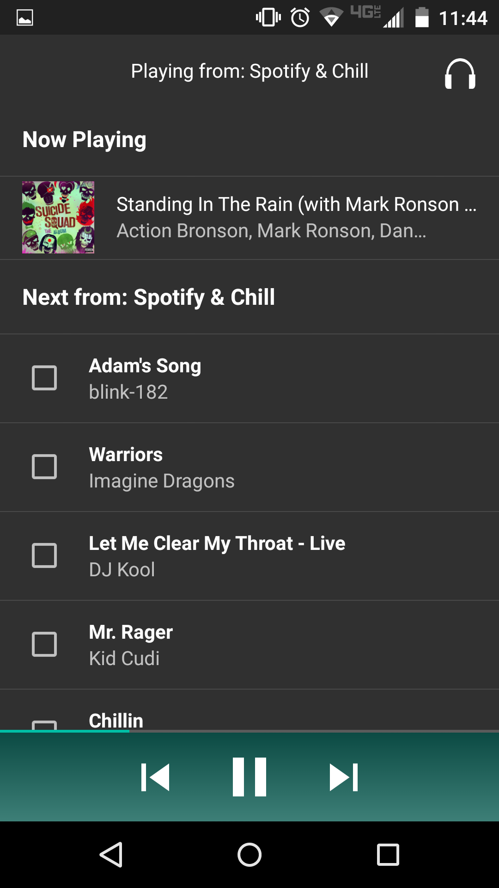
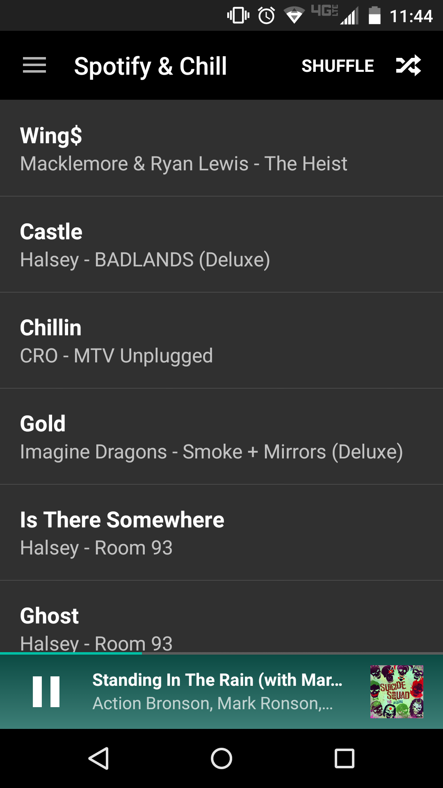
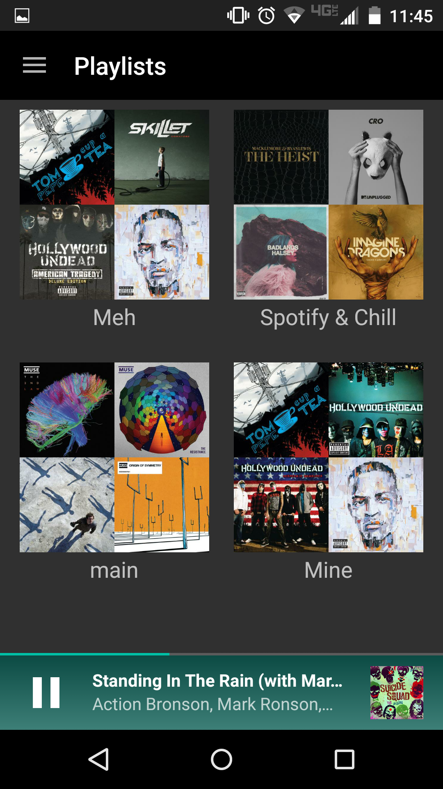
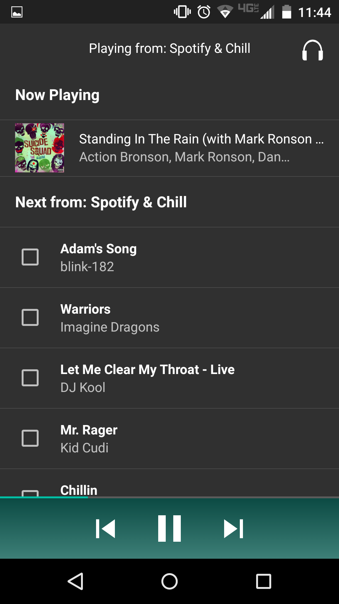
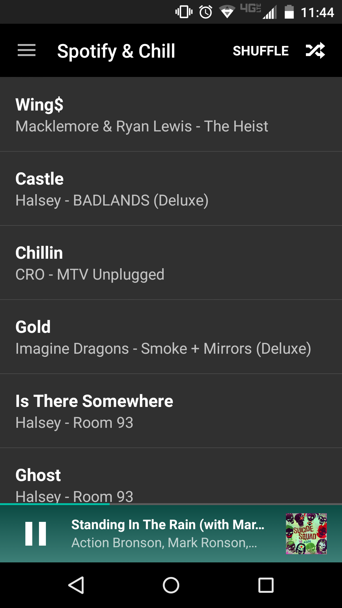
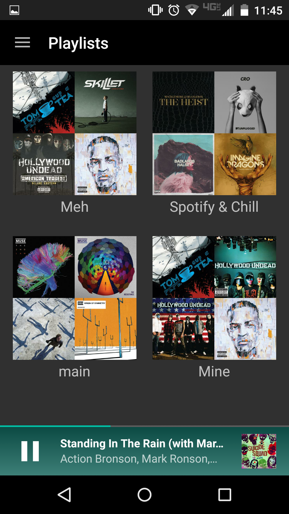

vocalize
vocalize is an Android application I am currently working on. The goal of this project is to produce an application that allows for hands-free Spotify use. This will be accomplished mostly through voice detection and hand gestures.
At the moment, I am in the process of finalizing the needed documentation for publication on the Play Store. It should be available for use within the next few weeks. I am also planning on open-sourcing the project soon as I do not believe it is viable to ask users to pay for money for this simple service. This has mostly been a fun project for me to design a cool app and mess around with APIs. Below are a few screenshots of what is currently implemented in the app!
 





HealthTrac
HealthTrac was a project for my software engineering class. We created an android mobile application and an ASP.NET MVC 5 web dashboard/ API. I was responsible for designing and creating the mobile application. The source for the project and screenshots of the mobile application can be found here. The project required a variety of different technologies including route tracking, social networking, data analytics, and the use of a random forest for categorizing activities. This project was the most fun project I have worked on so far and it inspired me to start working on Music Voice.
Assembler
The assembler I wrote was for my Embedded Systems and Computer Organization class I took my sophomore year. The assembler takes in an assembly file as input and converts it to a memory initialization file (.mif) which was used as input for a processor. I made the assembler to make the job of initializing the memory of the processor easier.
This was the first program I wrote in C# and I am sure there are many areas that could be improved to better utilize features of the language. I have included it on this projects page because it demonstrates my problem solving ability. The source code for the project can be found here.